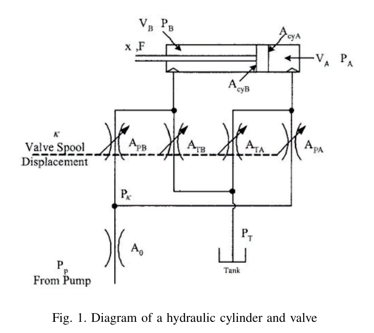
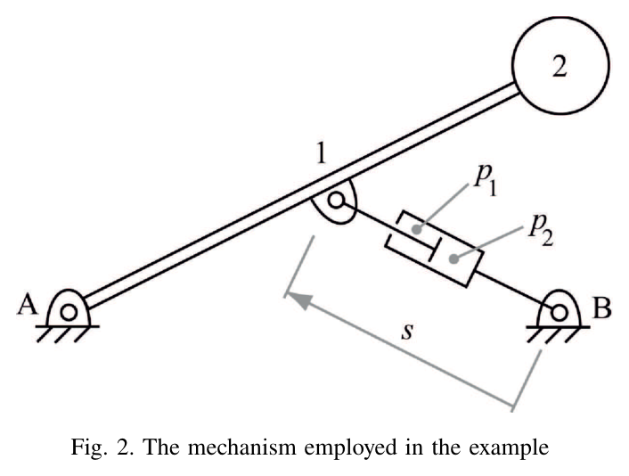
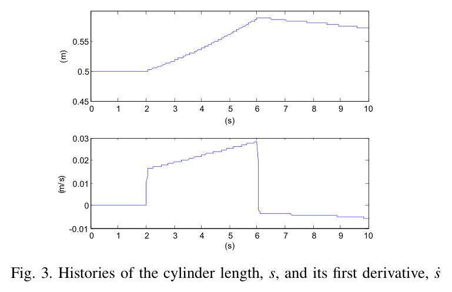
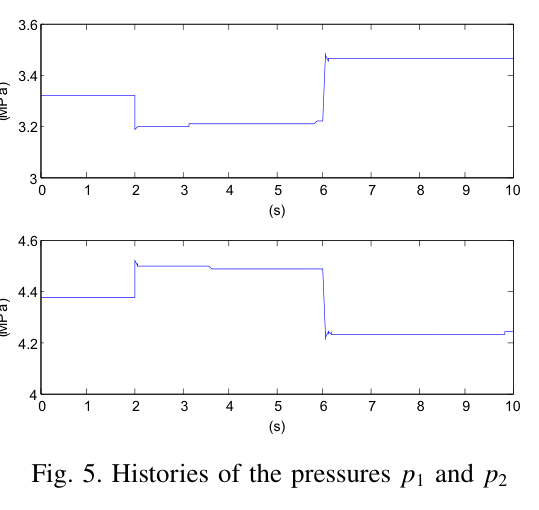
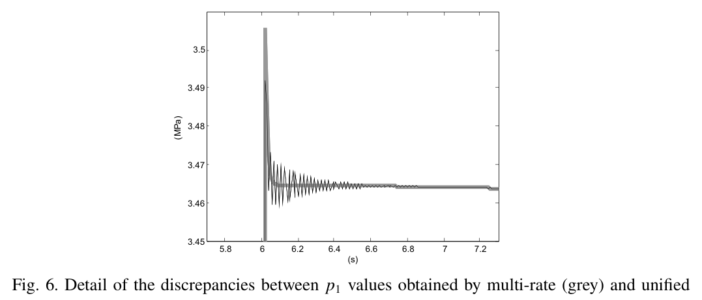
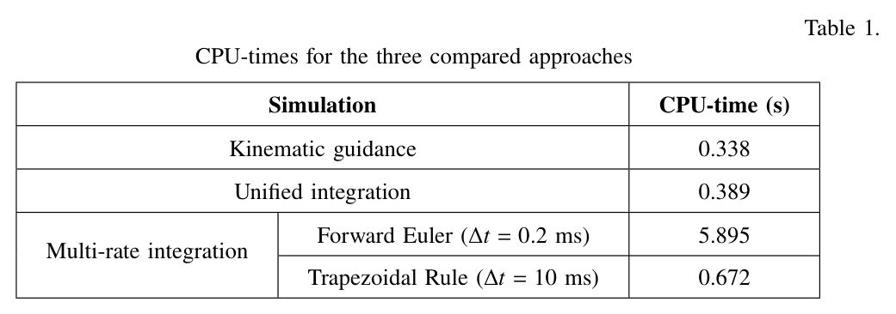

ABSTRACT / 초록
Naya 외(2011)는 유압 실린더가 구동하는 다물체계를 대상으로 기구학적 길이 강제, 다중 속도 적분, 통합 암묵 적분을 비교했다. 막대와 부가 질량을 움직이는 예제에서 통합 방식은 10 ms 간격으로 압력까지 계산하면서, 길이 강제 방식보다 약 15% 많은 CPU 시간을 사용했다. 전진 오일러 기반 다중 속도 방식보다는 약 15배 빨랐지만 압력에 작은 수치 진동이 남았다. 이 연구의 핵심은 큰 시간 간격의 가능성과 함께, 안정적으로 계산되는 해와 매끄러운 압력 이력이 서로 다른 기준임을 보여준다는 데 있다.
계산은 빨라졌다. 압력은 어떨까?
압력까지 풀어도 계산 비용의 증가는 작았다
통합 적분의 CPU 시간은 0.389 s, 유압을 풀지 않는 길이 강제 방식은 0.338 s였다. 이 예제에서는 유압 상태를 포함하는 비용이 비교적 작았다.
같은 기구 운동 뒤에 다른 압력 품질이 숨어 있다
운동 이력은 거의 겹쳤지만, 통합 적분 10 ms의 압력에는 미세 진동이 나타났다. 유압을 사다리꼴 규칙으로 5 ms마다 푸는 다중 속도 방식은 매끄러운 압력을 얻는 절충안이었다.
이득의 크기는 비교하는 적분기에 달려 있다
약 15배의 속도 차이는 유압을 전진 오일러 0.2 ms로 계산한 경우와의 비교다. 유압에도 암묵 사다리꼴 규칙을 사용하면 다중 속도 방식의 계산 비용 역시 크게 줄어든다.
방정식은 몇 개, 시간 척도는 훨씬 빠르게
연구진의 다물체 해석기는 자연 좌표, 지표-3 증강 라그랑지안 정식, 뉴마크·사다리꼴 적분, 속도·가속도 투영을 사용했다. 기존 굴착기 실시간 시뮬레이션에서는 10 ms 시간 간격을 사용해 왔다.
유압을 붙이면 상황이 달라진다. 챔버 압력은 소수의 1차 미분방정식으로 표현되지만, 최대 700 MPa에 이르는 체적탄성계수가 빠른 압력 응답을 만든다. 이 수치 강성 때문에 적분법과 모델 조건에 따라 10−6~10−4 s 수준의 작은 간격이 요구될 수 있다.

압력 변화는 체적 변화와 유량의 차이로 결정된다
노트에 제시된 식 (1), (3), (4)의 내용. 양방향 유동을 표현할 수 있도록 유량식의 제곱근 안에는 압력 차의 절댓값을 명시했다. 각 챔버 식의 유량은 정한 방향에 따른 부호를 포함한다.
| 기호 | 물리적 의미 |
|---|---|
| VA, V̇A | 챔버 체적과 피스톤 운동에 따른 체적 변화율 |
| QPA, QTA, QBA | 펌프·탱크 연결 유량과 챔버 간 누설 유량 |
| β(p) | 압력에 따른 체적탄성계수. a, b는 유체 모델의 상수 |
| Aorf, Cd, ρ | 오리피스 면적, 유량 계수, 유체 밀도 |
분리해서 자주 풀거나, 묶어서 함께 풀거나
기구학적 길이 강제
실린더의 길이 이력을 구속조건으로 지정한다. 유압 압력은 계산하지 않는다.
기구: 10 ms다중 속도 적분
기구와 유압을 나누어 적분한다. 빠른 유압계에 더 작은 시간 간격을 배정한다.
기구: 10 ms / 유압: 별도 간격통합 암묵 적분
기구 좌표와 챔버 압력을 하나의 연립 문제로 구성해 함께 수렴시킨다.
기구 + 유압: 10 ms통합 정식: 압력을 추가 상태로 포함하기
식 (17). q는 기구 좌표, p는 챔버 압력 벡터, Φ는 기구 구속조건, α는 벌칙 계수다.
압력 미분에도 사다리꼴 차분을 적용하고, 시간 간격의 제곱으로 스케일한 잔차를 뉴턴–랩슨 방법으로 푼다. 수렴 후에는 속도와 가속도를 제약 다양체에 투영한다.
통합 적분의 결합 구조 · 개념도
구현 비용은 이 결합에서 발생한다. 근사 접선 행렬에 ∂Q/∂p, ∂h/∂q, ∂h/∂q̇, ∂h/∂p 블록이 추가되면서 행렬이 비대칭이 된다. 기존 대칭 행렬용 솔버를 그대로 활용하기 어렵고, 결합 미분항도 구현해야 한다.
압력을 추가 상태로 넣어 함께 풀면,
통합 정식에 대한 해설 · 원문 직접 인용 아님
강성이 큰 유압계도 더 큰 간격으로 계산할 여지가 생긴다.
하나의 실린더로 비교 조건을 맞추다
예제는 길이 1 m, 질량 200 kg의 막대와 끝에 달린 250 kg 질량, 그리고 막대 중앙을 지지하는 실린더로 구성된다. 기구 좌표는 두 점의 x·y 좌표와 실린더 길이 s를 합쳐 5개이며, 통합 모델에는 챔버 압력 2개가 추가된다.

| 항목 | 설정 |
|---|---|
| 피스톤 면적 / 실린더 길이 | 0.0065 m² / 0.442 m |
| 점성 마찰 계수 | 105 N·s/m |
| 펌프 / 탱크 압력 | 7.6 / 0.1 MPa · 상수 |
| 유량 계수 / 밀도 | 0.67 / 850 kg/m³ |
| 밸브 면적 | Ai = 0.0005κ, Ao = 0.0005(1 − κ) |
| 스풀 입력 | 정적 평형 κ₀ 기준, 2~6 s에 −0.01, 6~10 s에 +0.01 |
| 초기 상태 | 정적 평형식 (32)로 압력과 κ₀ 결정 |
먼저 통합 방식으로 길이 이력을 계산한 뒤, 이를 길이 강제 방식의 입력으로 사용했다. 전진 오일러 다중 속도 방식에서는 기구의 10 ms 단계에 대해 유압을 0.2 ms 간격으로 50회 갱신한다.
운동은 겹치고, 압력은 차이를 드러낸다
운동 이력과 수치 일관성
통합 방식과 다중 속도 방식의 실린더 길이·속도는 그림에서 거의 하나의 선처럼 겹친다. 노트에 정리된 위치 차이는 0.1 mm 미만이다. 에너지 관련 변동은 약 1 J로, 약 1,000 J 규모의 퍼텐셜 에너지 및 일 변화와 비교해 작았다.

압력의 작은 진동은 남는다


다중 속도 방식에 사다리꼴 적분을 적용해도 유압 간격이 10 ms이면 통합 방식과 유사한 압력 이력을 얻었다. 이 예제에서 매끄러운 압력을 얻을 수 있었던 최대 유압 간격은 5 ms였다. 적분의 안정성뿐 아니라 관심 신호의 품질을 별도로 확인해야 하는 이유다.
CPU 시간: 암묵 적분끼리 비교하면 간격이 좁아진다
| 방식 | 유압 간격 | CPU [s] | 관찰 |
|---|---|---|---|
| 기구학적 길이 강제 | 계산 안 함 | 0.338 |
계산 비용의 기준선 |
| 통합 · 사다리꼴 | 10 ms | 0.389 |
압력 미세 진동 |
| 다중 속도 · 전진 오일러 | 0.2 ms | 5.895 |
해당 예제의 수렴 한계 간격 |
| 다중 속도 · 사다리꼴 | 10 ms | 0.672 |
통합 방식과 유사한 압력 |
| 다중 속도 · 사다리꼴 | 5 ms | 1.021 |
매끄러운 압력의 절충안 |
표의 값으로 계산하면 통합 방식은 사다리꼴 다중 속도 10 ms보다 약 1.73배, 5 ms보다 약 2.62배 빠르다. “15배”라는 결과에는 결합 구조뿐 아니라 유압 적분법과 시간 간격의 차이도 포함되어 있다.

큰 벌칙 계수와 결합 구현이라는 대가
통합 방식에는 α = 1010의 벌칙 계수가 필요했다. 노트에서 제시한 통상 범위 107~109보다 큰 값으로, 유압 강성이 기구의 제약 처리에도 영향을 준다는 관찰이다. 뉴턴 반복은 스풀 입력이 바뀌는 2 s와 6 s 근처에서 2~3회, 그 외에는 대체로 1회였다.
무엇을 보려는 시뮬레이션인가
방법의 선택은 압력이 필요한지, 어떤 시간 척도의 압력 변화를 관찰해야 하는지, 기존 솔버를 얼마나 수정할 수 있는지에 달려 있다. 이 연구의 결과를 실무적인 선택 기준으로 옮기면 다음과 같다.
| 우선하는 목표 | 검토할 접근 | 확인할 조건 |
|---|---|---|
| 주어진 운동 재현 | 기구학적 길이 강제 | 길이 이력을 알고 있으며 유압 예측이 불필요한가? |
| 압력을 포함한 빠른 계산 | 통합 암묵 적분 | 결합 미분항 구현이 가능하고 압력 미세 진동을 허용할 수 있는가? |
| 매끄러운 압력과 모듈 분리 | 사다리꼴 다중 속도 | 유압 간격을 줄였을 때 관심 파형이 충분히 수렴하는가? |
| 단순한 유압 적분 구현 | 전진 오일러 다중 속도 | 작은 간격에 따른 계산 비용을 감당할 수 있는가? |
결과가 말해 주지 않는 것
- 전체 굴착기에서의 성능: 검증 대상은 실린더 하나다. 여러 축의 결합이나 펌프 공유의 영향은 이 예제로 확인되지 않는다.
- 상세 유압 회로의 거동: 예제는 일정한 펌프·탱크 압력, 무시한 누설, 선형 밸브 면적을 사용한다.
- 보편적인 시간 간격: 10 ms와 5 ms는 해당 모델의 결과다. 다른 모델에서도 같은 안정성과 파형 품질을 얻는다는 뜻은 아니다.
TAKEAWAY
큰 시간 간격은 출발점이다.
끝은 관심 신호의 품질이다.
이 단일 실린더 예제에서 통합 암묵 적분은 기구와 유압을 10 ms 간격으로 효율적으로 계산했다. 그러나 압력의 매끄러움까지 필요하다면 유압을 더 촘촘히 적분하는 선택이 남는다.
다음 모델에서 먼저 정할 것은 허용 가능한 운동 오차와 압력 파형의 품질이다. 그 기준을 세운 뒤 적분법과 시간 간격을 비교하면, 빠른 계산이 실제로 쓸 수 있는 계산인지 판단할 수 있다.
출처와 읽기 범위
PRIMARY PAPER
An Efficient Unified Method for the Combined Simulation of Multibody and Hydraulic Dynamics: Comparison with Simplified and Co-Integration ApproachesMiguel A. Naya, Javier Cuadrado, Daniel Dopico, Urbano Lugris
Laboratory of Mechanical Engineering, University of La Coruña
The Archive of Mechanical Engineering, LVIII(2), 223–243, 2011.
원문 DOI: 10.2478/v10180-011-0016-4 ↗- 이 글은 제공된 Obsidian 논문 요약과 첨부 이미지에 근거해 재구성했다. 원문 전체에 대한 별도의 대조 검증이나 실험 재현을 수행한 보고서는 아니다.
- 그림 1·2·3·5·6과 표 1은 제공된 논문 이미지다. 번호는 원문 번호를 유지했다. 위치 차이의 근거로 노트가 언급한 그림 4는 제공되지 않아 수치 설명만 포함했다.
- CPU 증가율 15.1%, 속도비 15.2배·1.73배·2.62배는 제공된 표의 값에서 계산했다. 연구 결과의 적용 범위는 해당 모델과 Matlab 구현에 한정된다.
- HR35 경험과 AGX 적용 논의는 노트 작성자의 해석 및 검토 제안이다. 노트가 후속 참고로 언급한 “Casoli 2015”와 “서울대 MCV”는 상세 서지정보가 없어 이 글의 근거 문헌으로 사용하지 않았다.